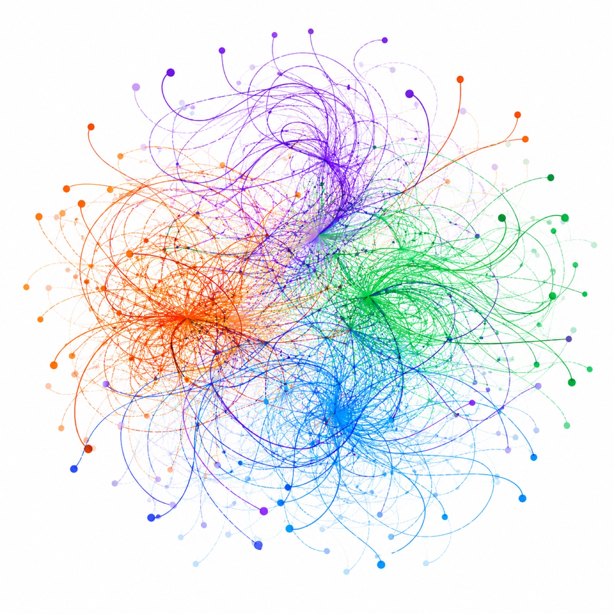
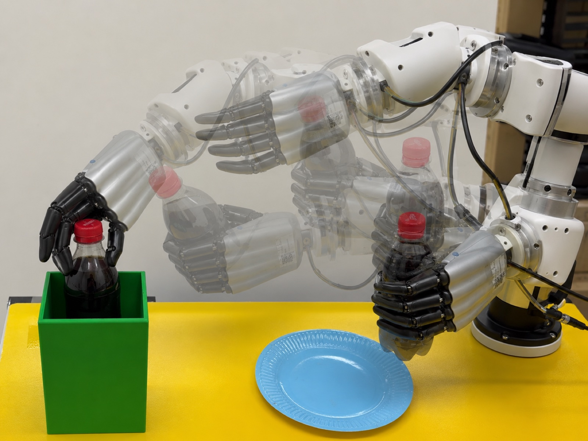
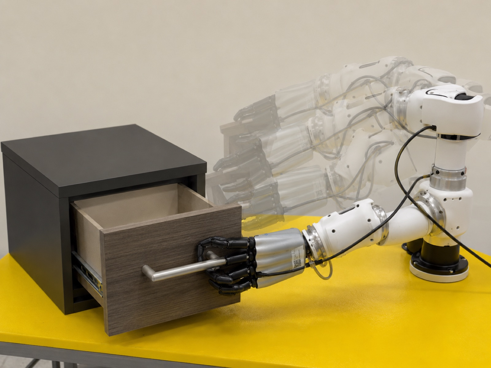
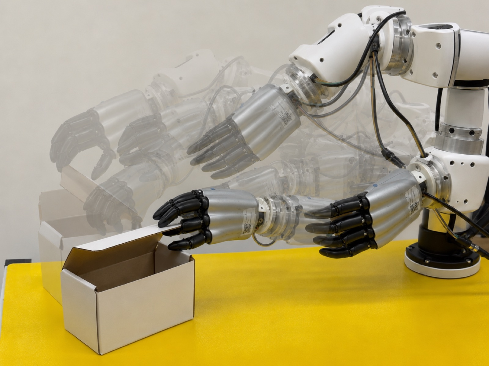
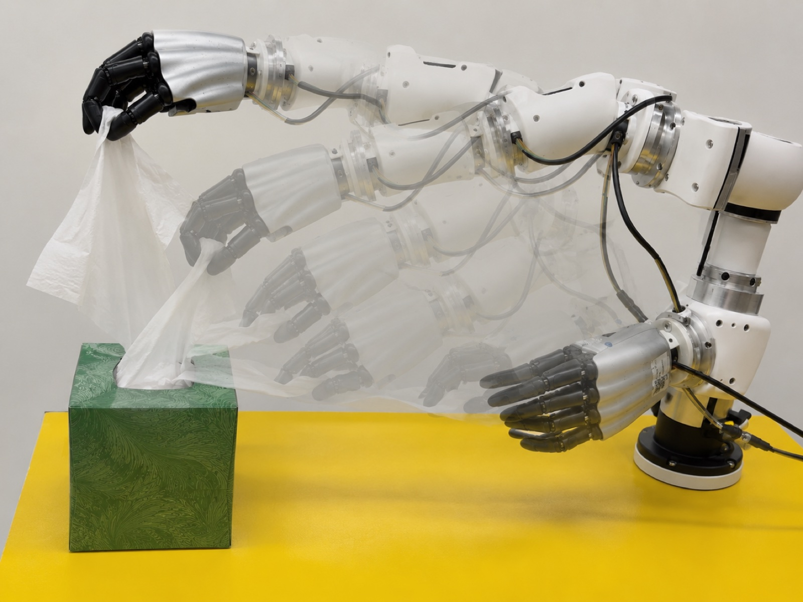
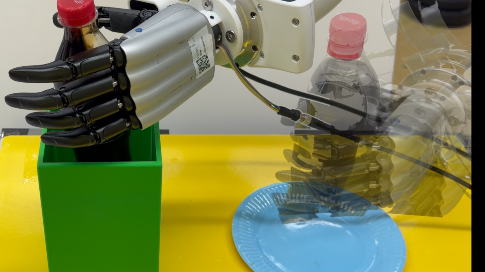

Learn LMPM
A latent motion prior model encodes recent hand history into a Gaussian prior and decodes latent samples back into executable hand targets.
Real-World Dexterous Manipulation
Latent Motion Prior-Guided Real-World Learning for Dexterous Hand Manipulation
LAMP learns a history-conditioned latent motion prior for dexterous hands, then uses the same compact, decodable action interface for imitation learning and online residual reinforcement learning.
Core Idea
Directly predicting or exploring high-dimensional hand commands makes arm-hand coordination difficult and can produce unsafe contact behavior. LAMP exposes the robot arm in its native control space while routing the dexterous hand through a low-dimensional latent motion prior learned from demonstrations.
Method
A latent motion prior model encodes recent hand history into a Gaussian prior and decodes latent samples back into executable hand targets.
Behavior cloning predicts native arm actions and low-dimensional hand offsets around the current prior center instead of full raw hand commands.
Online exploration applies residual corrections in the same latent hand space, reducing brittle high-dimensional finger perturbations during contact.

Real Robot Tasks




Media

Release
Citation
@misc{lamp2026,
title = {LAMP: Latent Motion Prior-Guided Real-World Learning for Dexterous Hand Manipulation},
author = {Anonymous Authors},
year = {2026}
}